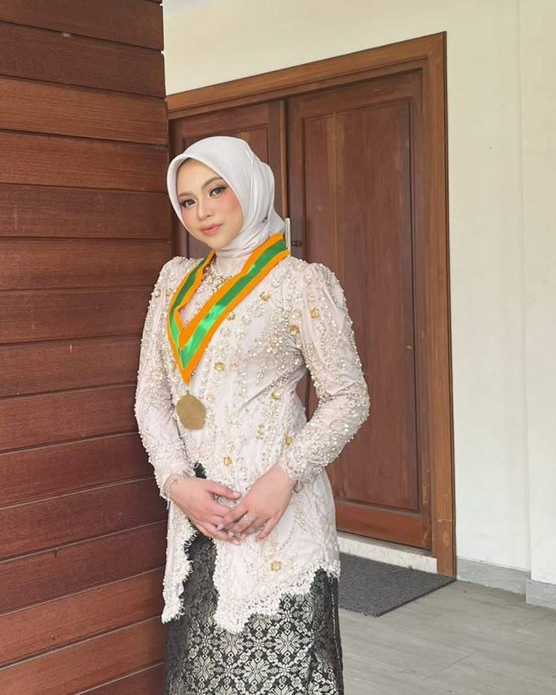
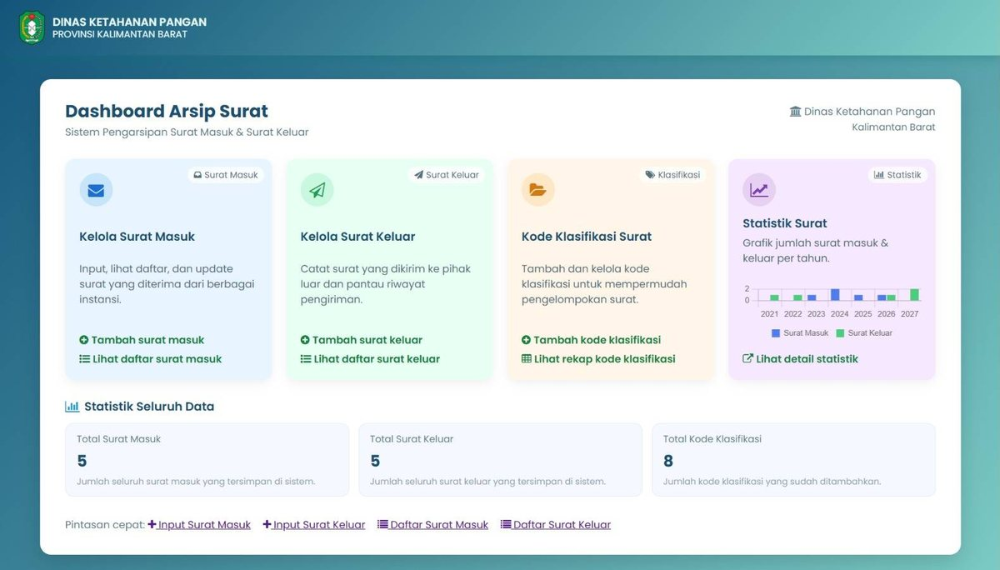
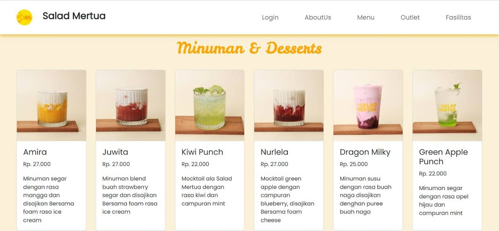
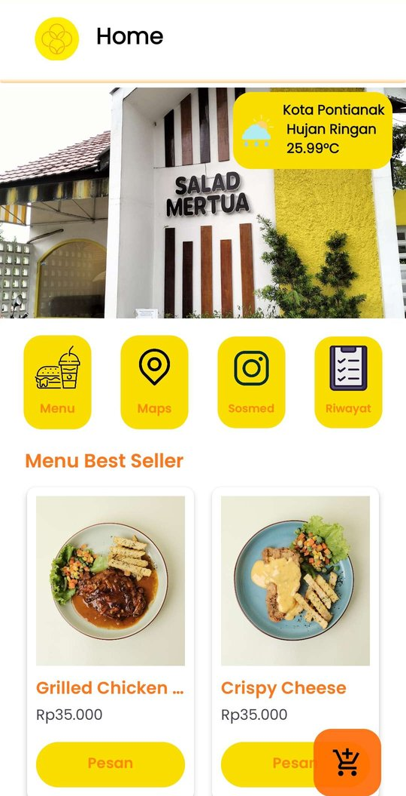
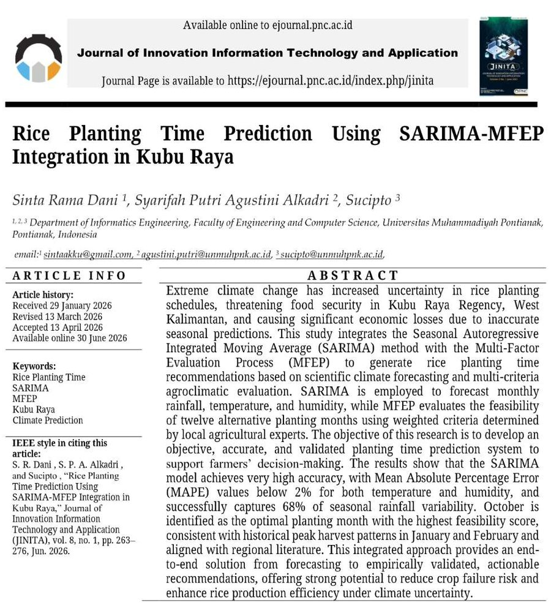
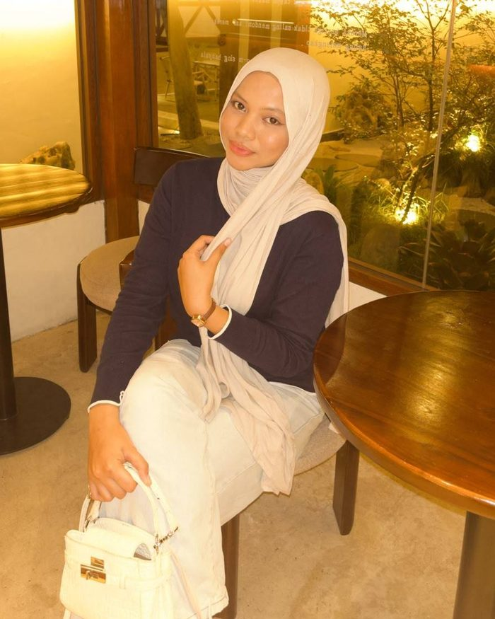

Lulusan Teknik Informatika yang menjembatani teknologi & komunikasi — Public Relations
Lulusan S1 Teknik Informatika Universitas Muhammadiyah Pontianak dengan predikat Cum Laude. Berpengalaman memimpin Departemen Humas BEM FTIK — membangun kerja sama dengan pihak internal maupun eksternal, menyusun korespondensi resmi, dan mengelola konten untuk citra organisasi. Didukung kemampuan analitis, administrasi yang teliti, dan penulisan ilmiah.
Surat direkap dengan Excel saat magang
Dokumen didigitalisasi & diarsipkan
Suka TikTok dari konten KKU 2025
Program kerja dipimpin & diawasi

Dinas Ketahanan Pangan Provinsi Kalimantan Barat
KKU 2025 · Desa Punggur Kecil — Divisi Pubdekdok
BEM Fakultas Teknik & Ilmu Komputer
DPM FTIK
Himpunan Mahasiswa Teknik Informatika
Klik kartu untuk melihat detail. Arahkan kursor untuk efek 3D.

Sistem pengarsipan berbasis web dengan 8 fitur utama untuk Dinas Ketahanan Pangan Kalbar, tercatat sebagai ciptaan HKI.


Aplikasi kasir untuk pencatatan transaksi, desain UI di Figma, plus website promosi produk.

Tugas akhir yang terbit di jurnal nasional terakreditasi SINTA 2.
S1 Teknik Informatika · Sep 2022 – Apr 2026
Tugas AkhirRice Planting Time Prediction Using SARIMA-MFEP Integration in Kubu Raya
2026 · Rice Planting Time Prediction Using SARIMA-MFEP
Januari 2026 · No. Pencatatan 001091892
Januari 2026
Agustus 2026

Terbuka untuk peluang di bidang humas, kemitraan, administrasi, konten kreatif, maupun pengembangan web.